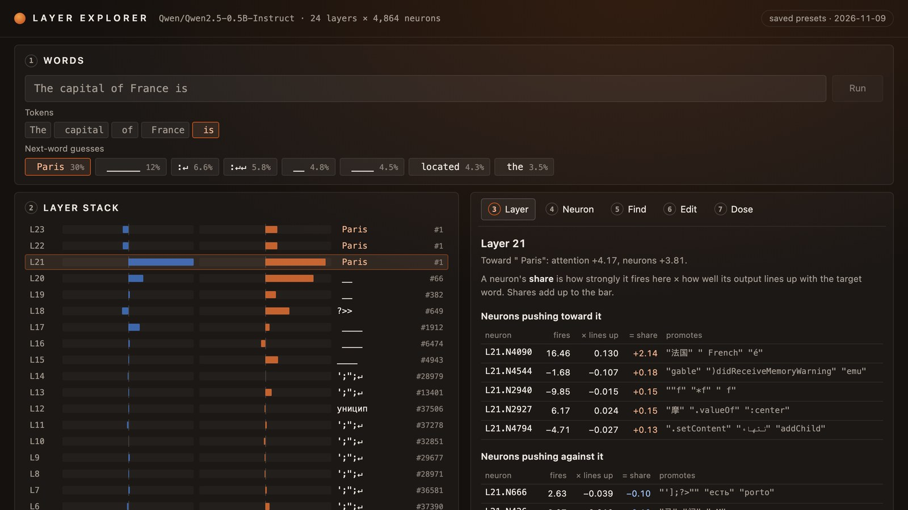
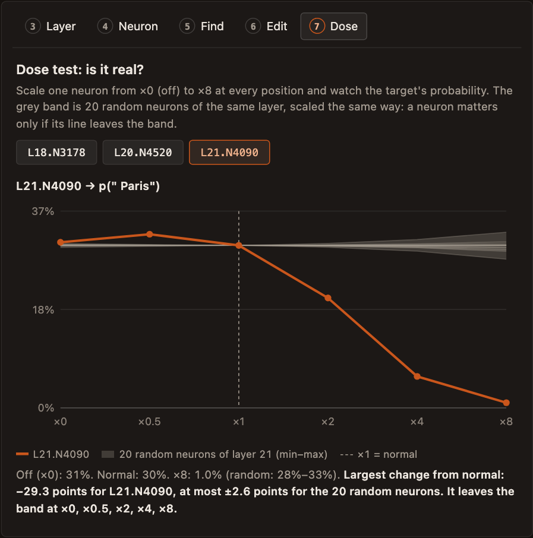

← Research·Guide·
Layer explorer: watch a model pick its next word
A step-by-step guide to steerlab inspect, a web screen where you type a few words and watch Qwen2.5-0.5B-Instruct arrive at its next word, layer by layer: which layers push it, which neurons, what a neuron writes, and what happens when you switch one off. It runs on a laptop CPU, and an explorer of six saved prompts is built into this page.

Summary: the short answer and the key results
In short
What does steerlab inspect show?
For any short prompt, how much each of the model's 24 layers pushed toward its next word, split into attention and neurons; what the model would say if it stopped after each layer; which heads and neurons did the pushing and which words each neuron writes; and what happens to the answer when you switch neurons off, flip them or turn them up. The split is exact: the parts add up to the model's real score for the word to within 0.00002. In the running example, the neuron with the largest share of the “ Paris” score is a France neuron, and switching it off changes nothing; the dose test, which compares a neuron with 20 random ones, is what tells the two apart.
Key results
| Check | Result | Compared with |
|---|---|---|
| Do the parts add up to the real score? | Yes: largest leftover 1.2 × 10−5 logits on 8 prompts, with the final normalisation's scale held at its real value | The scores themselves are 15 to 25 logits |
| Is the logit lens at the last layer the real output? | Yes: same top word on 8 of 8 prompts, largest difference 2.5 × 10−5 over the 151,936-token vocabulary | Float32 rounding |
| Does an unedited run change anything? | No: bit-identical scores on 8 of 8 prompts (also with an edit of ×1), and token-identical greedy continuations, 8 of 8 | A plain forward pass and plain generate |
| Do the strongest neurons matter more than random ones? | Mostly: 19 of the 23 saved dose tests move the target's probability more than twice as far as the most effective of 20 random neurons from the same layer | The other 4 move it less than the most effective random neuron |
| Is a neuron's word list a fair label? | For one neuron, yes: L21.N4090 (“法国”, “ French”, “ France”) peaks above 5 on 9 of 10 France prompts and 0 of 10 matched prompts about other countries | Mean peak 16.2 against 1.6 |
| Is the biggest share the neuron that matters? | Not always: switching off L21.N4090 (share +2.14) leaves P(“ Paris”) at 31%; switching off L20.N4520 (share +1.98) drops it to 13% | Normal: 30% |
01What you'll see
Type “The capital of France is” and a small model answers “ Paris” with 30% probability. Somewhere in its 24 layers that answer was assembled. If you could pause the model after each layer, as you would pause a program in a debugger, you would see the answer appear: mostly punctuation until layer 14, blanks like “ __” around layers 15 to 20, then “ Paris” at layer 21. The layer explorer is that debugger.
What exists. neuronaut turned this idea into a terminal tool you step through with arrow keys, and its web version turns it into a game. Interpretability research has the methods underneath it: the logit lens (read the half-finished stream as if it were the answer) and direct logit attribution (split the answer's score into one part per head and neuron), both standard in TransformerLens.
What is missing. A screen a newcomer can open in the browser, on a model that runs on a laptop, that puts those methods side by side and lets you test what you see: switch a neuron off and compare, or turn it up and compare it with random neurons. Reading a neuron's top words is easy; knowing whether the neuron matters is the part people skip.
Which layers and neurons push a model toward its next word, and how do you check that one of them really matters?
What this guide gives you:
steerlab inspect, a local web app with seven screens: words, the layer stack, a layer, a neuron, find, edit and a dose test;- a walkthrough of each screen on one running example, “The capital of France is”, with screenshots;
- an explorer of six saved prompts built into this page, which needs no install (section 5);
- five checks that the numbers on the screen mean what they say, and the ways it can still fool you.
02Install and run
The app needs Python 3.11 or newer and about 2 GB of memory. The model (1 GB) must already be in your Hugging Face cache, or you pass --download once.
git clone https://github.com/albertlieyingadrian/steerlab && cd steerlab
uv sync --all-packages --all-extras
uv run steerlab inspect --download # first time: fetches Qwen2.5-0.5B-Instruct
uv run steerlab inspect # then open http://127.0.0.1:8770Loading takes about 2 seconds. Each screen is computed when you open it, on the CPU: about 0.1 seconds for the layer stack, 0.6 for an edit with its two continuations, 0.8 for a dose test (21 neurons × 6 doses). Other Qwen2-, Qwen3- or Llama-style models from the Hugging Face cache work with --model. The app listens only on this computer (127.0.0.1).
Words used in the rest of this guide.
| Word | Means | Example |
|---|---|---|
| token | the piece of text the model reads or writes in one step; often a word with its leading space | “ Paris” is one token; “56” is two, “5” and “6” |
| target | the next token whose score the screens explain; by default the model's top guess | “ Paris” |
| logit | the model's raw score for a token before scores become probabilities; higher is likelier | “ Paris”: 17.22 |
| residual stream | the running total every layer reads from and adds to: a list of 896 numbers per token | |
| share | how much one part (a head, a neuron, a whole layer) adds to the target's logit | L21.N4090: +2.14 |
neuron L20.N4520 | neuron 4,520 of layer 20's MLP: one of the 4,864 numbers each layer computes per token and then writes back into the stream along a fixed direction | |
| logit lens | what the model would say if it stopped after a given layer: the final normalisation and the output matrix applied to the stream at that point | after layer 20: “ __” |
03The seven screens, one example
The example throughout is “The capital of France is”. Each figure is a short recording of the live app taking the step (they play on their own, muted; click to pause). The saved explorer in section 5 shows the same numbers.
1. Words: the prompt, its tokens and the model's guesses
In the live app you can click any guess to make it the target, type your own word (“Lyon”), or click an earlier token to ask what the model predicted there. Every other screen then explains that target at that position.
Why it matters. Everything below explains one number, the target's score at one position. Picking the target is picking the question; “why Paris?” and “why a blank?” get different answers from the same model.
2. The layer stack: where the answer is built
How to read it. Almost nothing happens in layers 0 to 14: tiny bars, and the lens says punctuation. Layers 17 to 21 do the work. Layer 21 alone adds 8.0 of the 17.2 logits (attention +4.17, neurons +3.81), and it is where the lens first says “ Paris”. Neurons contribute more than attention overall (+12.16 against +5.07).
Why it matters. The stack tells you where to look. Out of 24 layers, four do most of the work here, so the next screens start at layers 20 and 21. The footer is the check that the bars are the whole story: they add up to the model's real score (leftover −0.000011) once the final normalisation's divisor is held at its real value (1/rms = 0.463). Section 4 explains why.
3. A layer: its heads and neurons
Layer 20's neurons add +3.06, and one neuron, L20.N4520, supplies +1.98 of it: it fires −20.29 (strongly negative), and its output lines up negatively with “ Paris” (−0.098), so the product is positive. In layer 21 (open it from the stack in the explorer below), the largest share belongs to a head: L21.H6 looks at “ France” (73% of its attention) and writes “法国”, “ France” and “ French”, adding +3.58. That is the usual picture of a fact being moved from the subject's position to the last token.
Why it matters. A layer's bar is the sum of thousands of parts; this screen ranks them, so the few that carry the push are one click away. It also shows the two kinds of part separately: heads, which move information between tokens, and neurons, which work on one token (section 4).
4. A neuron: what it writes and where it fires
This neuron is quiet until the last token, “ is”, where it fires −20.3. Its word lists are no help: positive firing would promote Chinese province names, and since it fires negative here it promotes the opposite list, code fragments like “(PropertyName”. Its effect on “ Paris” comes through a direction no single word describes. That is common, and it is why screens 6 and 7 exist.
Some neurons do have readable lists. L21.N4090 writes “法国”, “ French”, “é”, “ France”, fires 11.7 on “ France” and 16.5 on “ is”, and has the largest share in layer 21 (+2.14). Section 6 checks its label on 20 prompts.
Why it matters. This is where a neuron gets a name. The demo shows both cases side by side: a neuron whose words fit (L21.N4090) and one whose words say nothing (L20.N4520). A name is a guess; screens 6 and 7 test it.
5. Find: which neurons write a word
Find starts from the word instead of the prompt. L21.N4090 is the best writer of “ Paris” in the whole model (cosine 0.218) and fires here. The next two, L23.N4159 and L20.N2314, write it nearly as well but are nearly silent on this prompt (shares −0.05 and +0.04): a neuron can be able to write a word and still play no part.
Why it matters. Find answers the opposite question from the layer view: not “who pushed here?” but “who could push this word anywhere?”. It needs no model run (section 4), so it is instant, and comparing its list with the shares here separates neurons that can write a word from neurons that did.
6. Edit: switch neurons off and compare
An edit sets a neuron's activation at every position: off (0), flipped (negative), scaled (×k) or set to a value; up to 8 at once. Switching L20.N4520 off drops P(“ Paris”) from 30% to 13%, although “ Paris” stays the top guess and the continuation still begins “ Paris. It is the largest city in Europe”. Flipping it drops “ Paris” to 0.8%, and the model writes “ located in the ____.” followed by a multiple-choice question.
Now the surprise. Switching off L21.N4090, the neuron with the largest share and a fitting label, leaves P(“ Paris”) at 31%. Later layers make up for it. A share says how much a part wrote toward the word in this run; it does not say what happens without it. Only an edit answers that.
Why it matters. A large share is not a large effect. The demo runs the two edits back to back: the neuron the earlier screens point at first changes nothing, and the second one cuts “ Paris” by more than half. Without this screen you would report the wrong neuron.
| Edit (France prompt) | P(“ Paris”) | Greedy continuation starts |
|---|---|---|
| none | 30% | “ Paris. It is the largest city in Europe” |
| L21.N4090 off (largest share, +2.14) | 31% | “ Paris. It is the largest city in Europe” |
| L20.N4520 off (share +1.98) | 13% | “ Paris. It is the largest city in Europe” |
| L18.N3178 off (share +0.84) | 14% | “ Paris. It is the largest city in Europe” |
| all three off | 4.1% | “ located in the ____. A. Atlantic Ocean” |
| L20.N4520 flipped | 0.8% | “ located in the ____. A. Atlantic Ocean” |
| L21.N4090 ×4 | 5.8% | “: A. Paris B. Nice C. L” |
Table 1. The saved edits for the France prompt (line breaks in continuations shown as spaces). Every one is in the explorer below.
7. Dose test: is it real?
A neuron matters for a word if changing it moves the word more than changing a random neuron does. L20.N4520 passes clearly: from 13% (off) to 65% (×8), while the 20 random neurons keep “ Paris” between 28% and 33% at every dose. The rule comes from steering: an effect counts only next to what a random change of the same kind does.

L21.N4090 leaves the band only when turned up, and in the “wrong” direction: more of the France neuron means less “ Paris”. It reads as a neuron that says “this is about France”, which helps “ Paris” a little at its normal strength and crowds it out when exaggerated. Neither its share nor its word list predicted that.
Why it matters. One edit can mislead: any change to a model moves its output a little. The dose test says how big a move is normal, by doing the same to 20 random neurons, and only a line that leaves the grey band counts. It is the same rule this project uses for steering: no effect without its random control.
04Under the hood: how the screens are computed
The screens rest on two kinds of part inside each layer, attention heads and neurons. This section first says what they are, in pictures, then how the tool catches each one during a run, how the shares are computed, and why Find and edits behave as they do. The code is in steerlab/inspect/core.py; line numbers below link to it.
Two kinds of part: attention and neurons
Think of each token as having a notepad: the residual stream, 896 numbers that every layer reads and adds to. Each of the 24 layers adds to every notepad twice, first with attention, then with neurons.
Neurons work inside one word. A layer's 4,864 neurons see only their own token's notepad. The lines into and out of them are weights, learned in training and then fixed. A neuron fires on a pattern and writes its own fixed message, louder or quieter (in Qwen its activation is SiLU(gate) × up). That is why a neuron has a stable list of words it promotes: L21.N4090 always writes the same “France / French” direction. It fires 16.5 at “ is” in “The capital of France is”, and −1.2 (barely) in “The capital of Japan is”. Stored facts and associations tend to be found in these blocks, though not only there.
Attention works between words. The boxes in Figure 10 are tokens, not neurons, and the lines go from “ is” back to earlier tokens. Their thickness is how much “ is” looks at each token, and it is not stored anywhere: it is computed fresh for every sentence. Through those lines the head copies information. What is learned is how to score tokens and what to copy. Head L21.H6 puts 73% of its attention on “ France” and writes “法国”, “ France”, “ French”; given “The capital of Japan is”, the same head puts 67% on “ Japan” and writes “ Japan”, “日本”.
steerlab inspect; the other lines are schematic).One layer uses both. For “ is”, attention first pulls “France” in from the earlier token; then the neurons in the “ is” column see “capital” and “France” together and push toward “ Paris”. Both only add to the notepad. After 24 such layers the notepad reads “ Paris”.
| Attention | Neurons (the MLP) | |
|---|---|---|
| Connects | token to token, across the sentence | number to number, inside one token |
| Its lines | computed fresh for every sentence | fixed weights, learned in training |
| Job | move information between tokens | add stored associations, often facts |
| What it writes | depends on what it looked at | the same direction, louder or quieter |
| Analogy | asking colleagues what they heard | checking your own reference book |
In steerlab inspect | blue bars; heads with what they look at | orange bars; neurons with what they promote; Find, Edit, Dose |
| Per layer in Qwen2.5-0.5B | 14 heads | 4,864 neurons |
Table 2. Attention and neurons side by side. Because a neuron's direction never changes, Find can search neurons without running the model; a head has no fixed direction, so the layer screen describes heads by what they look at instead.
Catching each piece: hooks
A hook is a callback that PyTorch calls in the middle of the model's computation, with the tensor that is passing through. trace() registers one just before the attention's output matrix (o_proj), where the 14 heads' results sit side by side (called z), and one just before the MLP's output matrix (down_proj), where the 4,864 neuron activations sit. One run of the model fills them all.
# core.py, Inspector.trace(), lines 189-195 (one comment left out)
for i, block in enumerate(self.blocks):
handles.append(block.register_forward_hook(_store(resid, i, output=True))) # the stream after layer i
handles.append(block.self_attn.o_proj.register_forward_pre_hook(_store(z, i))) # 14 heads, side by side
with torch.no_grad(), self.edited(edits):
for i, block in enumerate(self.blocks):
handles.append(block.mlp.down_proj.register_forward_pre_hook(_store(acts, i))) # 4,864 activationshead_outputs() cuts z into 14 slices of 64 numbers and multiplies each slice by its own part of o_proj, giving what each head wrote. down() takes down_proj's weights, transposed, so that row n is neuron n's fixed output direction.
# core.py, Inspector.head_outputs(), lines 227-229
z = trace.z[layer][pos].view(self.n_heads, self.d_head) # [14, 64]
W_O = self.blocks[layer].self_attn.o_proj.weight.detach().view(self.d_model, self.n_heads, self.d_head)
return torch.einsum("hd,mhd->hm", z, W_O) # [14, 896]: one write per head
# core.py, Inspector.down(), line 237
return self.blocks[layer].mlp.down_proj.weight.detach().T # [4864, 896]: row n = neuron nFrom pieces to shares
The model's score for a word is: take the final stream, divide it by its root mean square (rms), multiply by the final normalisation's weights, and take the dot product with that word's row of the output matrix (W_U). readout() folds all of that into one vector u, holding 1/rms at the value it really had. Any piece of the stream, dotted with u, gives that piece's share of the target's score.
# core.py, Inspector.readout(), lines 222-223
scale = self._norm_scale(trace.resid[-1][pos]) # 1/rms of the final stream, held fixed
return scale * self.w_norm * self.W_U[target] # u
# core.py, Inspector._run_view(), lines 292 and 296: one row of the layer stack
attn = float(self.head_outputs(trace, i, pos).sum(0) @ u) # blue bar: every head's write · u
mlp = float(trace.acts[i][pos] @ (self.down(i) @ u)) # orange bar: activations · (directions · u)So one neuron's share is its activation times how well its direction lines up with u (the “× lines up” column): for L20.N4520, −20.3 × −0.098 ≈ +1.98. Because the final stream is a plain sum of the embedding, every head's write and every neuron's write, the shares add up to the real score. Holding 1/rms fixed is the one approximation: it is exact for this run, and it is why an edit reruns the model rather than subtracting a share.
Find runs no model
find() only reads weights. It takes the word's direction (the normalisation weights times the word's row of W_U, scaled to length 1) and the cosine between it and each of the 116,736 neuron directions. Heads cannot be searched this way, because their direction depends on the prompt.
# core.py, Inspector.find(), lines 417-421
v = self.w_norm * self.W_U[target]
v = v / v.norm()
...
cos = torch.stack([self.down(i) @ v for i in range(self.n_layers)]) / self._down_norms # [24, 4864]Edits and the dose test change the activation itself
An edit is one more hook on the same spot, the input of down_proj, that rewrites one neuron's activation at every position (_edit_hook). The dose test does the same with a multiplier, for the chosen neuron and 20 random ones at once, one per row of a batch. Because the change happens inside the run, every later layer sees the edited value and can react to it. That is how later layers make up for L21.N4090 when it is switched off, and why the edit screen shows the whole stack again rather than one smaller bar.
# core.py, _edit_hook(), lines 560-564
def hook(module, args):
acts = args[0].clone()
for edit in edits:
acts[..., edit.neuron] = edit.apply(acts[..., edit.neuron]) # off: 0, flip: −a, scale: k·a, set: v
return (acts, *args[1:])05Try it here: six saved prompts
The explorer below is the same page as the live app, reading saved results instead of a running model. Pick a preset; click a layer, a neuron in a layer's table, or the Find, Edit and Dose tabs. Typing your own words needs the live app (section 2). Keys: ↑ ↓ move through layers, 1–5 switch tabs.
Open the explorer full screen. Saved for each preset: every layer, the 5 neurons pushing most toward and against the target in each layer (and their details), Find for the target, 7 edits and 4 dose tests.
| Preset | Target | P | Lens first says it | A finding to look for |
|---|---|---|---|---|
| Capital of France | “ Paris” | 30% | layer 21 | The largest share (L21.N4090) is not needed; L20.N4520 is |
| Golden Gate | “ Golden” | 79% | layer 22 | L21.N87 off: 79% → 25%; ×4 and the model writes “ Golden Golden Golden …” |
| 7 × 8 | “5” | 85% | layer 21 | L20.N1565 (writes “ six”, “六”) off: 85% → 48%; flipped, the answer becomes “112” |
| 7 × 8, told to fail | “5” | 60% | layer 21 | The instruction lowers “5” from 85% to 60%, but the model still answers 56; the same L20.N1565, flipped, again gives “112” |
| Opposites | “ small” | 91% | layer 19 | Each single neuron moves “ small” by a few points; all three off: 74% |
| Days of the week | “ Friday” | 52% | layer 19 | L21.N3397 ×4: “ Friday” 2.1%, and the model writes “ and Friday are the five weekdays” |
Table 3. The presets. P is the target's probability; “lens first says it” is the lowest layer after which the target is the lens's top word. Each line is one prompt: an anecdote to explore, not a measured result.
06How the numbers were checked
A screen like this is only useful if its numbers mean what they say. Before writing this guide we fixed five checks, ran them on the six presets plus two new prompts (“The largest planet in the solar system is” → “ Jupiter”, “Water freezes at a temperature of zero degrees” → “ Celsius”), and report them all (sanity.py, results/sanity.json).
- The split adds up. Embedding + every head + every neuron against the real logit, 8 prompts. Largest leftover: 1.2 × 10−5.
- The lens ends at the real output. The logit lens after layer 23 against the model's own scores for all 151,936 tokens, 8 prompts. Same top word 8 of 8; largest difference 2.5 × 10−5.
- Unedited means untouched. The inspector's recorded run against a plain forward pass: bit-identical scores on 8 of 8 (and 8 of 8 with an edit of ×1, which multiplies by exactly 1). Its unedited greedy continuation against plain
generate(12 tokens,repetition_penalty=1.0): identical, 8 of 8. The package's tests check the same on a tiny random model, plus that an edit changes only the neuron it names. - Dose against random. For each of the 23 saved dose tests: the neuron's largest change from normal against the largest change any of its 20 random neurons made. 19 of 23 moved the target more than twice as far. Section 7 lists the four that did not.
- One label checked by hand. L21.N4090 promotes “法国”, “ French”, “ France”. On 10 France prompts and 10 matched prompts about other countries (“The capital of Germany is”, “The Prado museum is in Madrid,” …), its peak activation over the prompt is above 5 on 9 of 10 France prompts and 0 of 10 others (mean 16.2 against 1.6). The miss: “She speaks fluent French and” (2.6).
| Fixed before any run | Changed after looking at results |
|---|---|
The five checks; the model; float32 on the CPU; doses ×0, ×0.5, ×1, ×2, ×4, ×8; 20 random neurons per dose test (seed 0); greedy continuations of 12 tokens with repetition_penalty=1.0 |
The preset prompts: a first maths prompt (“7 x 8 =”) and a first opposites prompt (“The opposite of hot is”) had a space or a blank as the top guess, so they were reworded. The dose verdict, which first called a 0.5-point move “outside the band”, now reports the size of the move. |
Conditions: Qwen2.5-0.5B-Instruct in float32 on an Apple laptop CPU, eager attention (so head patterns can be read), no sampling. The export of six presets takes under 3 minutes; sanity.py about one.
07How to read it without fooling yourself
- A share is not an effect. The share says how much a part wrote toward the word in this run. Later layers can make up for a missing part (L21.N4090 off: 30% → 31%), or a part can matter through other neurons. Use an edit or a dose test before saying a neuron “does” something.
- The split holds the final scale fixed. Every share assumes the final normalisation divides by the number it really used. That makes the split exact for this run, and an approximation for any other run: an edit changes the divisor too, which is why the Edit screen reruns the model instead of subtracting a share.
- Word lists are a first guess. They read a neuron's direction as if no layer came after it, and many neurons write directions no word describes (L20.N4520's lists are province names and code fragments). Neurons also respond to many unrelated things. Check a label on prompts you choose, as in check 5.
- The random band can be wide. In all four dose tests that failed check 4, some random neuron moved the target further than the chosen one. Two of the chosen neurons do move it several points (Golden Gate L22.N131: 7.0; opposites L20.N3874: 6.6), but a random neuron of the same layer moved it more (15.9 and 10.6). The other two are L23.N276, Find's best writer of “5”, on the two maths prompts: it fires so weakly that even ×8 moves “5” by half a point or less. A strong writer that does not fire does nothing.
- One prompt is an anecdote. Every finding on this page is about one prompt. A neuron that matters for “The capital of France is” may not matter for “Paris is the capital of”. To claim more, run the same edit on many prompts and count.
08Implications for AI safety
Looking inside a model is one of the few ways to check what it does without trusting what it says, and screens like this make it look easy. The risk is the step from “this neuron's words fit” to “this neuron does it”. The France neuron had the largest share and a fitting label, and switching it off changed nothing. In safety work the same step decides whether a “deception feature” or a “sandbagging neuron” is evidence or decoration. The sandbagging preset shows the other half: an instruction to fail moved the first digit's probability from 85% to 60%, the model still answered 56, and the neuron that mattered most was the same one as without the instruction.
Before reporting what a neuron does, switch it off and dose it against random neurons from the same layer, on more than one prompt.
09What this does not show
- Nothing here is a finding about Qwen in general: the six presets are single prompts, chosen to be easy to read.
- The label check covers one neuron on 20 hand-written prompts.
- Edits act on single neurons, and shares are direct effects only. Circuits that work through several layers (one head reading what another wrote) need path patching, which this tool does not do.
- It was built and checked on Qwen2.5-0.5B-Instruct. Larger Qwen2 and Qwen3 models load with
--modelbut are slower on a CPU and were not checked here. - The saved explorer keeps the top 5 neurons per layer per side; the live app shows 8 and can open any neuron.
10Reproduce it
uv run steerlab inspect --export experiments/layer-explorer/report/explorer # the saved explorer (~3 min)
uv run python experiments/layer-explorer/sanity.py # the five checks (~1 min)
uv run python experiments/layer-explorer/make_cover.py # the cover: screenshots of the explorer
python -m http.server 8790 --directory experiments &
uv run python experiments/layer-explorer/screenshots.py # Figure 8 (needs playwright)
uv run steerlab inspect --port 8771 &
uv run python experiments/layer-explorer/record_demos.py http://127.0.0.1:8771/ # Figures 1-7, videos (needs ffmpeg)
uv run pytest packages/steerlab/tests/inspector # the package tests (tiny model)Or all at once: reproduce.sh (--dry-run prints the commands).
11What's next
- Edits over many prompts: run one edit on 50 prompts and report how often the target drops, with an interval, so a neuron's role is a count rather than an anecdote.
- Steering directions and SAE features next to neurons: the same share, edit and dose screens for a direction from
steerlab directionsor a feature from an SAE. - Head edits and attention patterns: switch a head off, and draw its full attention pattern rather than its top two tokens.
12Questions and answers
What is steerlab inspect?
A local web app that shows, for a short prompt, how each layer of Qwen2.5-0.5B-Instruct pushes toward the next word, which heads and neurons do the pushing, and what happens to the answer when you switch neurons off or turn them up. It runs on a laptop CPU.
What is the logit lens?
A way to read a model's half-finished work: apply the model's final normalisation and output matrix to the residual stream after an earlier layer, as if the model stopped there. For “The capital of France is”, it first says “ Paris” after layer 21 of 24.
Why does switching off the neuron with the largest share not change the answer?
Because the share measures what the neuron wrote toward the word in one run, not what the rest of the model does without it. Later layers can make up the difference, as they do for L21.N4090.
How is this related to neuronaut?
neuronaut is a terminal tool that steps through a model's layers and neurons like a debugger. The layer explorer borrows that idea and adds a web screen, an exact split of the answer's score, edits with side-by-side continuations, and a dose test against random neurons.
AAppendix: data
| File | What it holds |
|---|---|
report/explorer/data.json | The saved explorer, one entry per preset: run (tokens; top 8 guesses with prob and logit; target; layers, one row per layer with attn and mlp shares, the lens word says, target_rank and target_prob; embed, sum, leftover, norm_scale), layers (per layer: heads and the top 5 neurons toward and against, each with act, align, share, promotes), neurons (per neuron: promotes, suppresses, fires per token), find, edits (edited run and both continuations) and doses (scales, curve, 20 random curves, band_lo, band_hi). Numbers rounded to 4 significant figures. |
results/sanity.json | The five checks: leftover per prompt, lens_last (largest difference, same top word), identical (counts out of 8), dose (per saved dose test: doses outside the band, own and random largest change), gloss (peak activation of L21.N4090 on each of the 20 prompts) |
How to cite
Lie, A. (2026). Layer explorer: watch a model pick its next word.
steerlab. https://albertlieyingadrian.github.io/steerlab/experiments/layer-explorer/report/